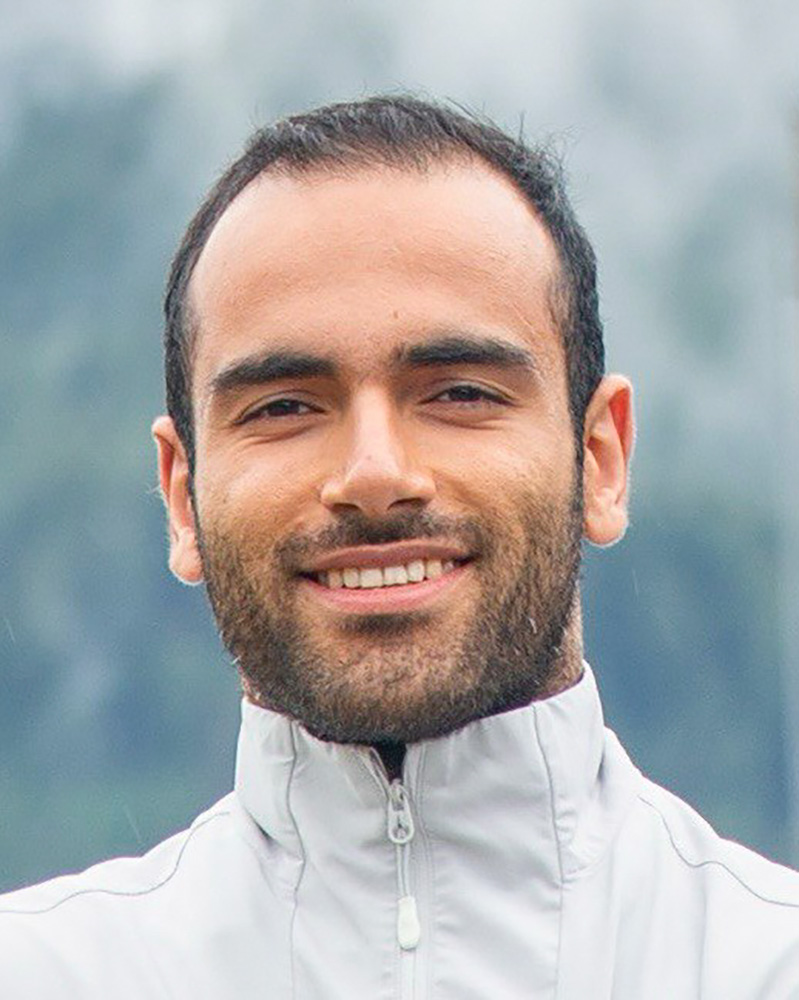
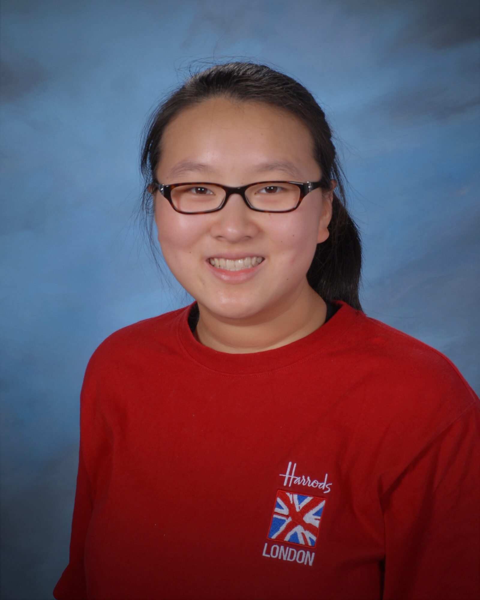
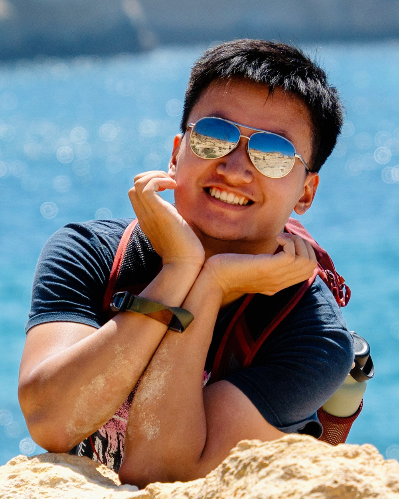
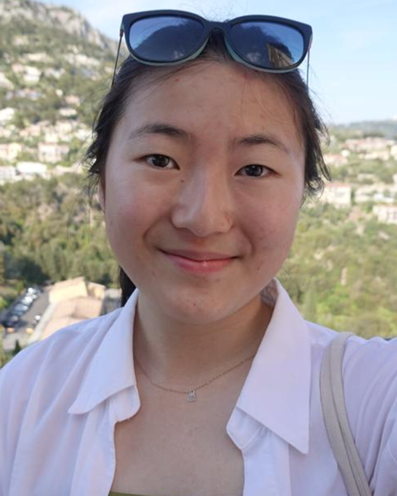
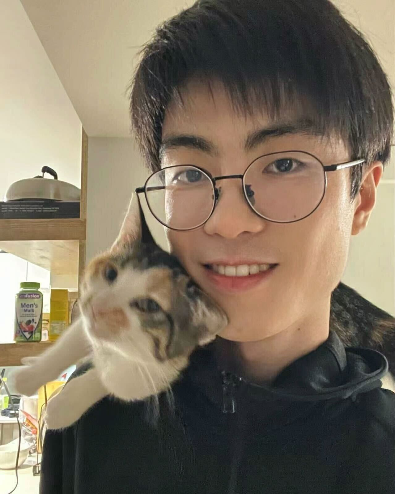

Director
Wenzhen Yuan
Assistant Professor
Meet the team
Graduate Students

Hung-Jui (Joe) Huang
Ph.D. Student

Ruihan Gao
Ph.D. Student

Yuchen Mo
Ph.D. Student

Amin Mirzaee
Ph.D. Student

dakarai crowder
Ph.D. Student

Ruohan Zhang
Ph.D. Student

Jingyi Xiang
Ph.D. Student

Jacqueline Yau
Ph.D. Student

Pei-Hsun Su
M.S. Student

Yixuan Wang
M.S. Student

Iris Xu
M.S. Student
Research Assistants
Dylan Edwards
ISE
Undergraduate Students

Harsh Gupta
ECE

Xingyu Zhu
ECE

Richard (Rick) Xu
ECE
Seoyeon (Leah) Lee
MechSE

Shuban Iyer
ECE
Manav Chandaka
MechSE
Jazlyn Teoh
ECE
Tommy Chen
MechSE
Yifan Luo
CS
Past Members
Graduate Students
Arkadeep Chaudhury
Yichen Li
Gang Yan
Tim Man, M.S.
Raj Kolamuri, M.S.
Shubham Satish Kanitkar, M.S.
Research Assistants
Kojo Vandyck
Undergraduate Students
Matthew Kwong
Dingjia Shen
Brian Wu
Adrian Santosh
Xiping Sun
Shengmiao (Samuel) Jin
Wangyihan Guo
Zhi (Leo) Wang
Dhun Nishchal
Yixuan Wang
Vidhi Patel
Khuslen Misheel
Siyuan Chen
Alexander Lyons
Ruijia Xing
Yifan You
Zirui Zhu
Akhil Padmanabha
Mihir Kasmalkar
Feng Jiang